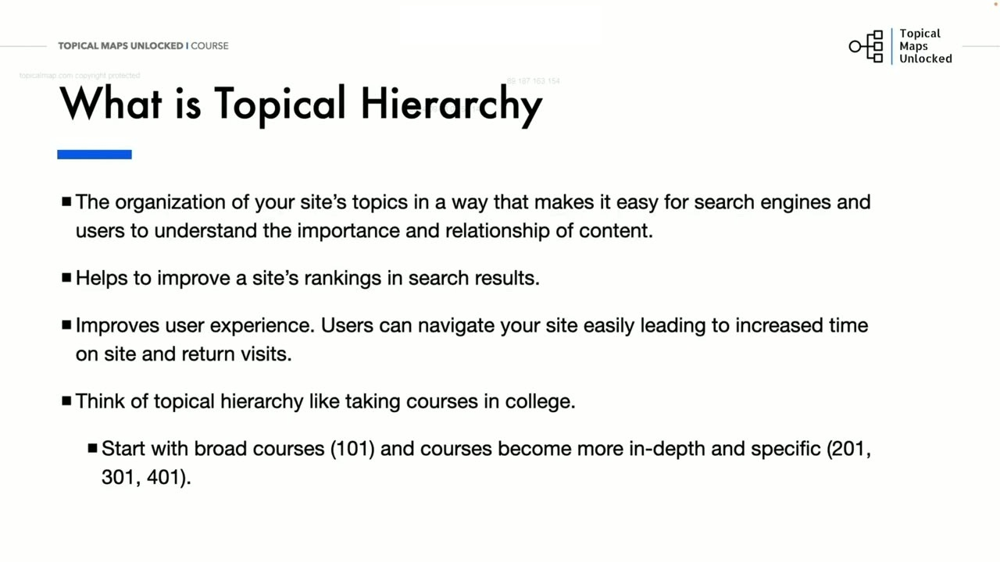
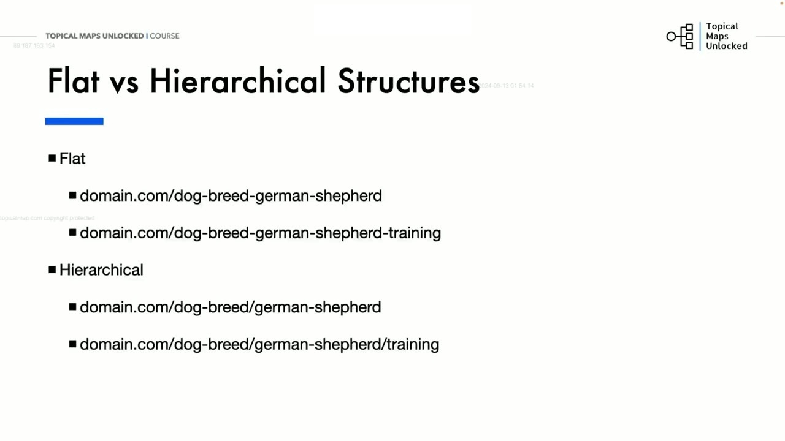
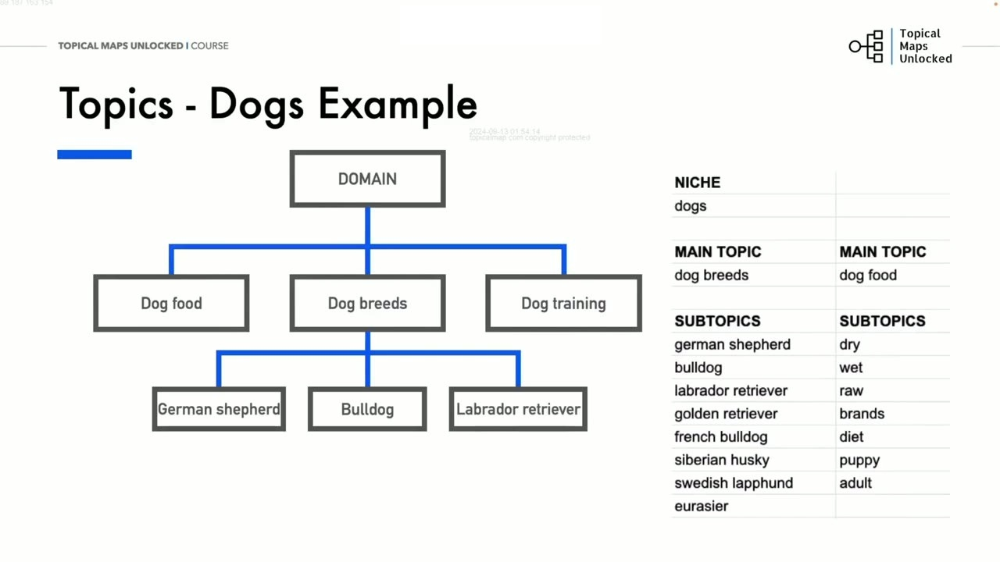
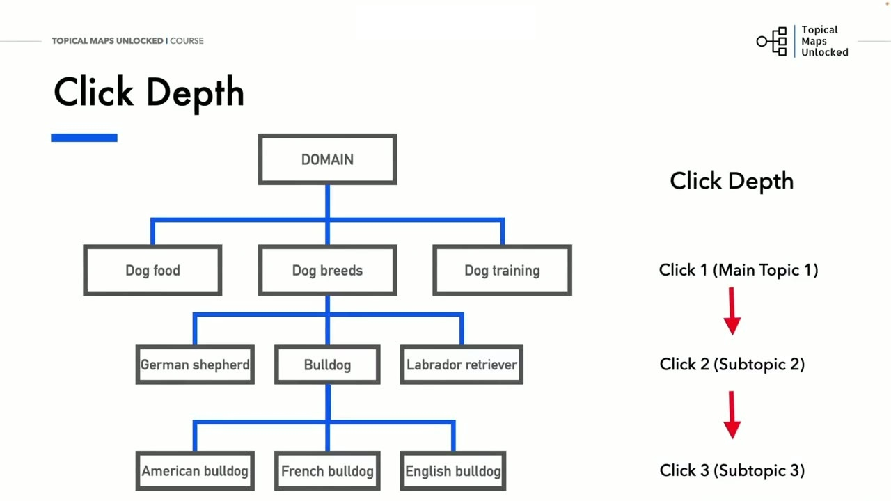
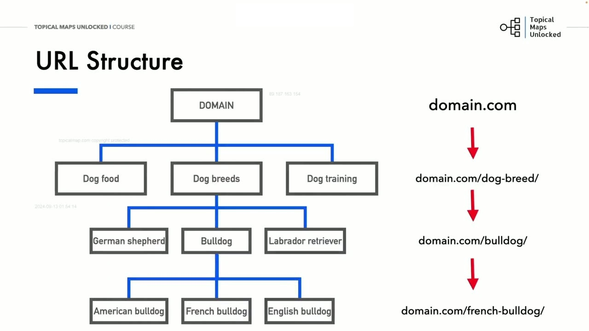

Intro to Topical Hierarchy and Site Architecture
1. Bản chất của Phân cấp chủ đề (Topical Hierarchy) và Ẩn dụ khóa học đại học
Trong bài học mở đầu của Học phần 06, Yoyao giới thiệu khái niệm cốt lõi: Topical Hierarchy (Phân cấp chủ đề). Đó là phương pháp tổ chức các chủ đề của trang web theo cách tối ưu nhất giúp cho cả công cụ tìm kiếm và người dùng dễ dàng hiểu được tầm quan trọng tương đối và mối quan hệ phụ thuộc giữa các nội dung.
Một kiến trúc website phân cấp rõ ràng sẽ giúp công cụ tìm kiếm nhanh chóng nhận diện được đâu là nội dung trụ cột trung tâm và đâu là các bài viết bổ trợ chi tiết.
Để người học dễ hình dung, Yoyao đưa ra một ẩn dụ cực kỳ thú vị: "Hãy nghĩ về phân cấp chủ đề giống như lộ trình tham gia các khóa học ở trường đại học!"
- Bạn luôn bắt đầu từ những môn học nhập môn bao quát nhất (các lớp 101 cơ bản).
- Sau đó, bạn dần dần bước lên các lớp học chuyên sâu, đào sâu vào từng khía cạnh kỹ thuật phức tạp (các lớp 201, 301 và 401 nâng cao).
Một cấu trúc phân cấp chuẩn mực giúp cải thiện vượt bậc thứ hạng của trang web trên trang kết quả tìm kiếm, đồng thời nâng tầm trải nghiệm người dùng, gia tăng thời gian trên trang (Time on Site) và thúc đẩy tỷ lệ khách quay trở lại thường xuyên.
Bằng cách tổ chức nội dung đi từ nền tảng đến chi tiết, bạn giúp độc giả không bao giờ cảm thấy bị ngợp trước khối lượng thông tin khổng lồ, mà từng bước được dẫn dắt để hiểu sâu sắc toàn bộ chủ đề một cách tự nhiên nhất.

2. So sánh Cấu trúc phẳng (Flat) vs Cấu trúc phân cấp (Hierarchical)
Yoyao đặt lên bàn cân so sánh hai trường phái thiết kế cấu trúc URL phổ biến:
- Cấu trúc phẳng (Flat Structure): Toàn bộ bài viết được đặt ngay sau tên miền chính mà không có bất kỳ thư mục con nào:
Ví dụ:domain.com/dog-breed-german-shepherdhoặcdomain.com/dog-breed-german-shepherd-training. - Cấu trúc phân cấp (Hierarchical Structure): Các bài viết được tổ chức lồng vào nhau theo từng cấp thư mục logic:
Ví dụ:domain.com/dog-breed/german-shepherdvàdomain.com/dog-breed/german-shepherd/training.
Mặc dù cấu trúc phẳng có ưu điểm là đường dẫn URL ngắn gọn, nhưng nó bộc lộ những nhược điểm vô cùng tai hại: Tạo cảm giác vô tổ chức, cực kỳ khó điều hướng đối với người dùng, khó khăn trong việc theo dõi tiến độ từng Silo và gây trở ngại lớn cho việc quản trị chiến lược liên kết nội bộ.

3. Mô hình kiến trúc dạng cây: Phân cấp 4 tầng trong ngách Thú cưng
Để trực quan hóa cấu trúc phân cấp, Yoyao phác thảo mô hình kiến trúc cây nội dung mẫu trong ngách Chó (Dogs):
- Gốc (Domain): Trang chủ website
domain.com. - Tầng Main Topics: Phân chia thành 3 trụ cột chính:
Dog food,Dog breeds, vàDog training. - Tầng Subtopics cấp 1: Nằm dưới nhánh Dog breeds, phân chia ra các giống chó cụ thể:
German shepherd,Bulldog,Labrador retriever. - Tầng Subtopics cấp 2: Nằm dưới nhánh Bulldog, tiếp tục phân nhánh thành các phân loài nhỏ:
American bulldog,French bulldog,English bulldog.
Mô hình cây này giúp người quản trị website nhìn thấy rõ ràng toàn bộ các mối quan hệ phụ thuộc cha - con giữa các chủ đề một cách trực quan nhất.

4. Nguyên tắc Độ sâu nhấp chuột (Click Depth): Tối đa 3 đến 4 cú nhấp từ Trang chủ
Một chỉ số kỹ thuật then chốt mà Yoyao đặc biệt nhấn mạnh là Click Depth (Độ sâu nhấp chuột):
- Click 1: Từ Trang chủ nhấp chuột vào Main Topic 1 (ví dụ:
Dog breeds). - Click 2: Từ Main Topic nhấp vào Subtopic 2 (ví dụ:
Bulldog). - Click 3: Từ Subtopic nhấp vào bài viết chi tiết Subtopic 3 (ví dụ:
French bulldog).
Quy tắc bất biến: Độ sâu nhấp chuột không bao giờ được vượt quá 3 đến 4 cú nhấp từ trang chủ. Nếu một trang nội dung bị chôn giấu quá sâu (Click depth >= 5), bot của Google sẽ rất hiếm khi thu thập dữ liệu định kỳ và giá trị sức mạnh liên kết (link equity) truyền từ trang chủ xuống sẽ bị suy giảm gần như bằng không.

5. Hai phong cách định dạng URL Structure: Thư mục lồng nhau vs Thư mục phẳng
Yoyao kết thúc bài học bằng việc so sánh hai phong cách triển khai đường dẫn URL thực tế trên website:
- Phong cách 1 (Thư mục lồng nhau hoàn toàn - Hard Hierarchical URLs):
domain.com/dog-breed/bulldog/french/. Phong cách này thể hiện cấu trúc phân cấp vật lý hoàn hảo, nhưng nhược điểm là URL có thể bị quá dài dòng. - Phong cách 2 (Thư mục bán phẳng - Semi-flat / Flat URLs):
domain.com/french-bulldog/hoặcdomain.com/bulldog/french/. Đường dẫn URL ngắn gọn, thân thiện với việc chia sẻ xã hội.
Yoyao khẳng định: Dù bạn chọn phong cách URL nào thì Topical Hierarchy vẫn có thể được thiết lập vững chắc 100% thông qua cấu trúc menu điều hướng, chuỗi đường dẫn Breadcrumbs và chiến lược liên kết nội bộ (Internal Links)! Điều cốt lõi là sự nhất quán trong toàn bộ hệ thống trang web của bạn.
Khi các liên kết nội bộ được thiết lập bám sát theo sơ đồ phân nhánh của Topical Map, các thuật toán thu thập dữ liệu của công cụ tìm kiếm sẽ dễ dàng hiểu được ngữ cảnh chuyên môn và độ sâu thẩm quyền của trang web mà không gặp bất kỳ trở ngại nào.

Nguồn và đối chiếu
- Topical Maps Unlocked 2.0 · 01-Intro to Topical Hierarchy and Site Architecture (Video bài học chính).
- Đối chiếu ngữ nghĩa với bản tiếng Anh: Bản Tiếng Anh/06-Building Structured Topical Maps/01-Intro to Topical Hierarchy and Site Architecture.mp4.